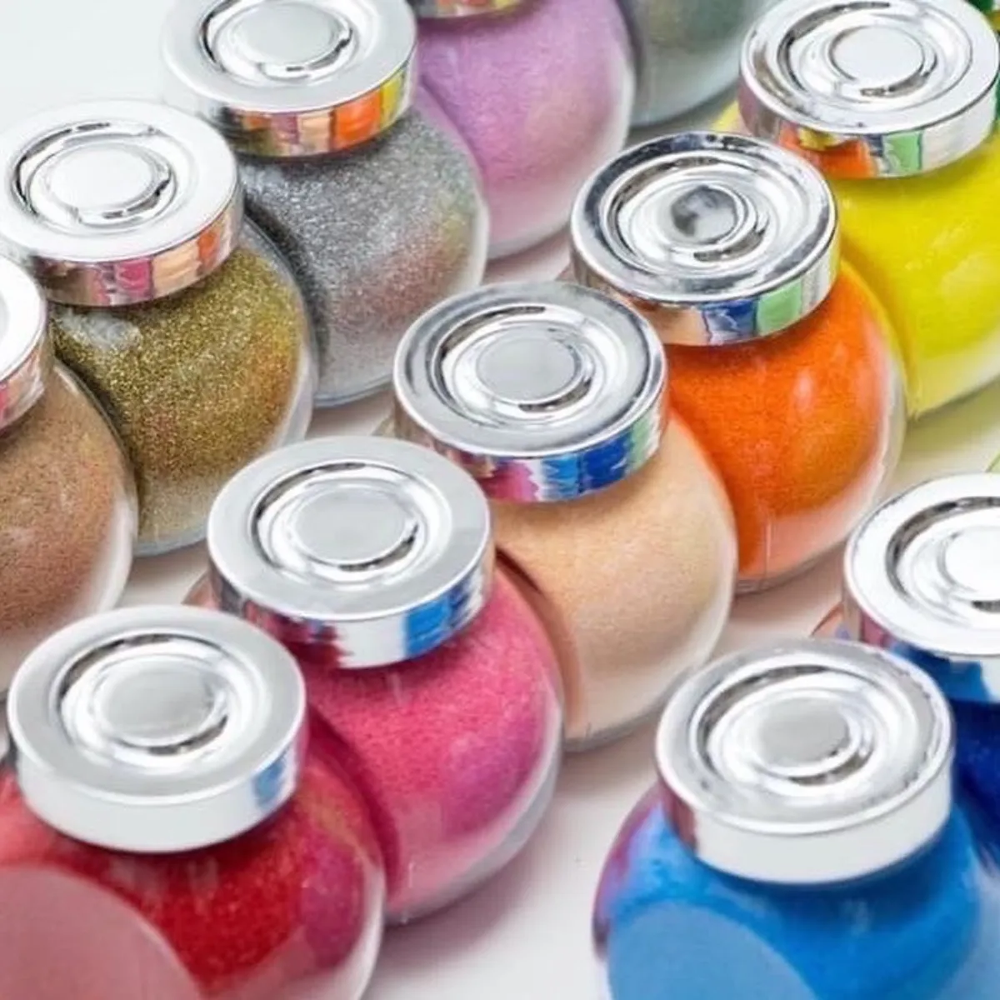

「10周年・20周年の記念に、社員が心に残る企画を」
そんな担当者様へ、500回以上の企業イベント開催実績から、社員・取引先・家族が本気で喜ぶユニークな周年記念イベント企画10選をご紹介します。定番の式典だけでは物足りない、でも奇をてらいすぎたくない——そんなバランスを大切にしたリアルな提案集です。
周年記念イベントを成功させる3つのポイント
周年記念イベントは、通常の社内イベントとは違う「特別感」を演出することが大切です。でも、豪華にすればいいというわけではありません。実際に成功している企業の周年イベントには、3つの共通点があります。
ポイント1：社員が「主役」になれる設計
周年記念で一番避けたいのが、社員が「見ているだけ」の式典になってしまうこと。役員挨拶や動画上映だけでは、記念の実感が湧きにくいものです。社員一人ひとりが「自分も周年の一部になった」と感じられる、参加型コンテンツを必ず組み込みましょう。
体験型ワークショップ、社員表彰、社員インタビュー動画など、「社員が画面に映る」「社員が手を動かす」時間を最低でも30分は確保するのがコツです。
ポイント2：全員参加できる内容
運動会のような体を動かす企画は盛り上がりますが、体力差・年齢差・身体的配慮が必要な方が置き去りになるリスクがあります。周年記念は「会社全体の祝賀」ですから、新入社員からベテラン社員、時短勤務の方、海外駐在の方まで、全員が同じように楽しめる企画がベストです。
座ったままできる体験、オンライン同時参加可能なコンテンツ、難易度の差がない活動——こういった「全員参加のハードルが低い」企画が、結果的に満足度を高めます。
ポイント3：記念に残る「形」がある
イベントが終わった後、手元に何が残るかも重要です。記念ノベルティ、周年ロゴ入りの制作物、集合写真、動画など、日常の中で「あの日の周年イベント」を思い出せる形があると、社員のエンゲージメントが長期的に高まります。
特に、自分自身で作った記念品は、既製品のノベルティとは比較にならない愛着が生まれます。後述するサンドアートのような体験型コンテンツは、この「思い出を形にする」機能を両立できる数少ない企画です。
周年記念イベントのユニーク企画10選
ここからは、担当者様が実際に企画会議で提案できる具体的なアイデアを10個ご紹介します。規模・予算・テーマに合わせて組み合わせてみてください。
1. 体験型ワークショップ（サンドアート等）
周年記念の定番になりつつあるのが、参加者全員で同じ体験を共有するワークショップ。サンドアート・フラワーアレンジメント・クラフトビール醸造など、1〜2時間で完成する体験が人気です。世代・性別を問わず楽しめる内容を選びましょう。
2. 社員×家族の参加型イベント
10周年・20周年の節目には、社員の家族も招待するイベントが感動を生みます。「いつもお父さんが働いている会社」「ママの大切な仲間」を家族に見てもらう時間は、社員の誇りとエンゲージメントを一気に高めます。
3. 記念品作り（社員自身の手で）
社員自身が記念品を作る企画は、コストパフォーマンスも満足度も抜群。世界に一つだけのグラス、手作りキャンドル、マイ名刺ケースなど、日常で使えるアイテムを選ぶと、周年の余韻が長く続きます。
4. 周年ロゴ入りオリジナル作品
制作物に周年ロゴ・コーポレートカラーを入れるだけで、一気に「特別なイベント」感が生まれます。サンドアートならグラスに周年ロゴを印刷したり、オリジナル台紙を用意することで、完成品が会社の記念品そのものになります。
5. 取引先招待の感謝イベント
周年は取引先・顧客への感謝を伝える絶好の機会。会食だけでなく、一緒にものづくりを体験する時間を設けると、名刺交換では生まれない深い関係性が築けます。「あの周年イベントでご一緒しましたね」が、その後の商談のきっかけにもなります。
6. 表彰式＋アート体験コラボ
従来の表彰式は壇上のやり取りだけで終わりがち。表彰式の後にアート体験を組み合わせることで、受賞者と他の社員が自然に会話できる場が生まれます。「おめでとう」を直接伝える時間、ぜひ作ってください。
7. 社員総会の余興として
社員総会のプログラムの中盤、30〜60分の余興枠にワークショップを組み込むケースも増えています。講演や報告で疲れた脳に、手を動かす時間は最高のリフレッシュに。その後のプログラムへの集中力も上がります。
8. 創業秘話＋記念作品展示
創業者インタビュー動画と合わせて、歴代社員が作った記念作品を展示するコーナーを設けるのも人気の演出。「10年前のあの人」「あの時の第一号プロジェクト」を可視化することで、会社の歴史が社員の記憶として定着します。
9. CSR連動のチャリティイベント
周年記念をきっかけに、地域貢献・社会貢献のチャリティ活動を企画するのもおすすめ。社員が作った作品を販売して寄付する、地域の福祉施設でワークショップを開催するなど、「祝う」と「還元する」を両立できます。
10. 全国拠点オンライン同時開催
全国・海外に拠点がある企業にぴったりなのが、オンライン同時開催型の周年イベント。材料キットを各拠点に事前配送し、Zoomで繋ぎながら同じワークショップを体験。「離れていても一つの会社」という一体感が生まれる、最新の周年企画です。
周年記念イベントのお見積り、LINEで気軽に相談♪
お見積り・空き状況のご確認はLINEで気軽に♪
通常2営業日以内にご返信いたします。
サンドアートが周年記念に選ばれる理由
10選の中でも、近年特に周年記念イベントでの採用が増えているのがサンドアートです。実際に500回以上のワークショップを通じて見えてきた、周年記念で選ばれる3つの理由をご紹介します。
理由1：全員参加できる（新入社員からシニアまで）
サンドアートは、3歳から90歳まで同じ完成度で楽しめるという稀有なアート。絵が苦手でも、不器用でも、どんな配色でも美しく仕上がります。若手社員の緊張もベテラン社員の恥ずかしさも、砂に触れた瞬間に消えていく——そんな空気感が生まれます。
周年記念という「全社員の祝賀」にふさわしい、誰も置き去りにしない体験です。
理由2：記念品として形が残る
完成したサンドアート作品は、社員のデスクや自宅に何年も飾られる記念品になります。グラスに周年ロゴを印刷すれば、見るたびに「あの周年の日」を思い出せる、世界に一つだけの記念品の完成です。
数ヶ月後・数年後のアンケートでも「デスクに飾っている」「今でも大切にしている」という声が多く、記念品の寿命が長いのが特徴です。
理由3：SNS映え＆社内報コンテンツに最適
カラフルな砂と社員の笑顔は、写真映え・動画映えが抜群。当日の様子をそのまま社内報・公式SNS・採用広報にも活用できます。「自分の会社、こんな素敵なイベントをやるんだ」という内外への発信効果も大きいです。
企画の流れ
ヒアリング（開催日3ヶ月前〜）
周年のテーマ・参加人数・会場・予算・組み込みたい演出をお伺いします。LINE・Zoom・対面いずれも対応可能。担当者様のイメージを丁寧に言語化します。
企画提案（2週間以内）
ヒアリング内容をもとに、タイムテーブル・制作物案・お見積りを含む企画書をご提出。周年ロゴ活用や他コンテンツとの連携もご提案します。
準備（開催日2ヶ月前〜）
材料の発注・カスタマイズ制作・会場下見・運営リハーサルを進めます。司会進行や他社スタッフとの連携もこの段階で擦り合わせます。
当日運営
講師が会場に出張（またはオンライン接続）して、ワークショップを全面運営。担当者様は他の進行に集中していただけます。撮影スタッフとの連携もお任せください。
アフターフォロー
当日の撮影データ、社内報用テンプレートをご提供。アンケート作成のお手伝い、次回イベントのご相談もお任せください。
費用の目安
| 50名規模 | 20万円〜 （講師1〜2名・材料費込み） |
|---|---|
| 100名規模 | 35万円〜 （講師2〜3名・セッション制） |
| 200名規模 | 60万円〜 （講師3〜5名・複数セッション） |
| 全国同時開催 | 80万円〜 （オンライン配信・拠点別材料配送） |
| 周年ロゴカスタマイズ | +3万円〜 （ロゴ入りグラス・台紙制作） |
| 出張費 | 別途（福岡県外の場合） |
よくある質問
何名規模まで対応できますか？
1回のセッションで50名まで、複数セッション制にすれば200名規模の周年記念イベントにも対応可能です。全国拠点を結ぶオンライン同時開催なら500名以上の大規模開催も実績があります。ご要望に応じて講師数やセッション数を調整します。
自社の周年ロゴを作品に入れられますか？
はい、対応可能です。貼付用のロゴシール、オリジナル台紙、周年ロゴ入りグラスの制作など、ご予算に応じたカスタマイズをご提案します。当日に社員の方が自分の手でロゴを入れる演出も人気です。
他社のケータリングや司会と連携できますか？
もちろん可能です。式典全体の進行表に合わせてワークショップを組み込みます。司会進行の合間、乾杯後の余興、表彰式の前後など、タイミングのご相談も承ります。イベント制作会社様からのご依頼も歓迎です。
イベント後のアフターフォローはありますか？
当日の集合写真・制作風景の撮影データをお渡しします。また、社内報や公式SNSで使える投稿用テンプレートもご提供可能です。希望者様には、作品の飾り方ガイドや追加購入のご案内もお送りしています。
お申し込み方法
まずはLINEで「周年記念イベント相談希望」とメッセージをお送りください。開催予定日・参加人数・ご予算感をお伺いし、2営業日以内に初回提案をお送りします。会社の節目を一緒に盛り上げましょう。
周年記念イベントのご相談
20万円〜｜全国出張・オンライン対応｜500回以上の実績
LINEで「周年記念イベント相談希望」と送るだけ！

原野 玲未REMI HARANO
サンドアート講師 / Webデザイナー / 5児の母
福岡県在住。日本サンドアート協会認定講師として年間100件以上のワークショップを開催。企業イベント・周年記念イベント・チームビルディングなど、法人案件の実績も500回以上。「全員が主役になれる体験」をモットーに企画を作っています。